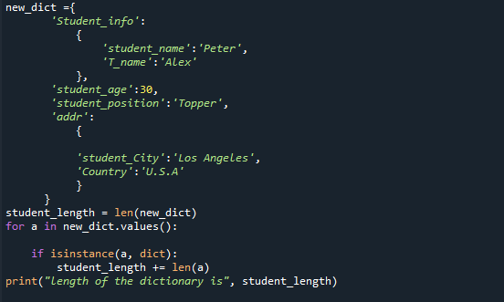

A len() Python metódus egy lista, karakterlánc, szótár vagy bármely más iterálható adatformátum hosszát adja vissza a Pythonban. ... A Python len() metódus egy beépített függvény, amellyel bármilyen iterálható objektum hosszát ki lehet számítani.
